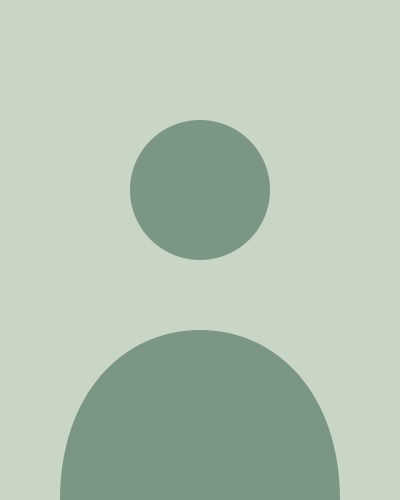
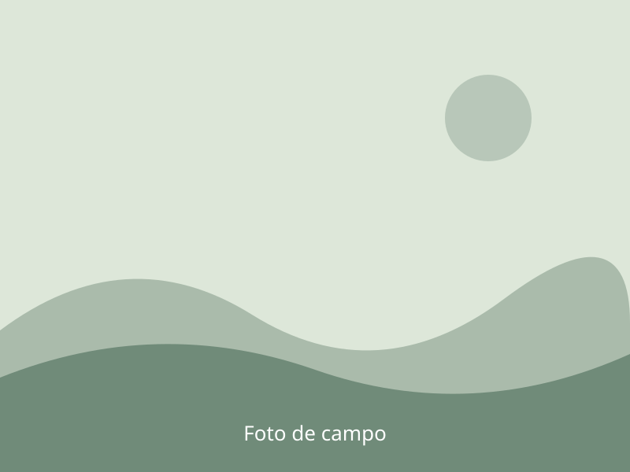

Nome do Aluno
Mestrado/Doutorado pelo Programa XXX — Instituição (XXX)
- Interesse 1
- Interesse 2
- Interesse 3
Sobre
Descreva aqui o projeto de pesquisa do aluno: pergunta central, métodos e relevância.
Fale aqui sobre as motivações e interesses do aluno — trajetória, o que o atraiu para a área e quais perguntas ainda o movem.

